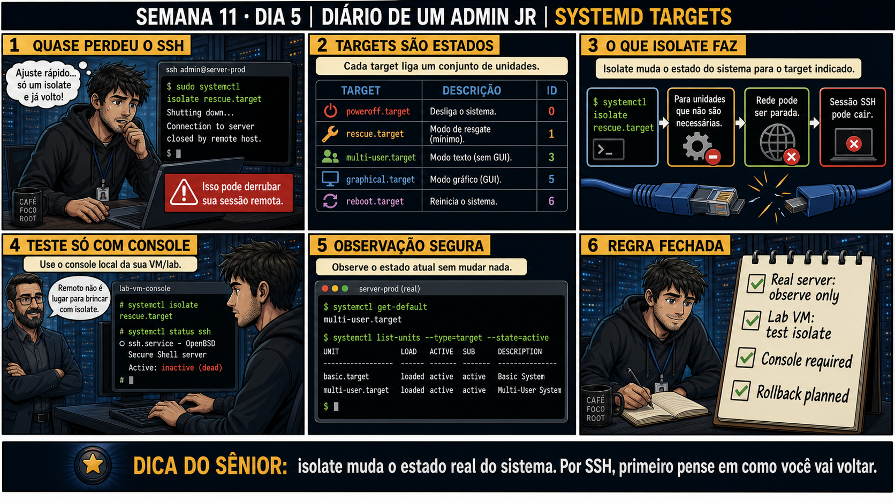

DIARIO DE UM ADMIN JR. | FASE 1 — LINUX, DO BÁSICO AO AVANÇADO
Antes de começar — 20 segundos de memória (Dia 4)
1. Ontem, o que "inactive" significava quando o lvscan mostrou o volume group — o dado estava perdido? 2. Ontem o problema era o sistema não CONSEGUIR chegar ao systemd. Hoje o systemd já está de pé e funcionando — mas você mesmo pode derrubar o próprio acesso trocando o estado dele com isolate. Por que isso é arriscado especificamente via SSH?
1. Não — "inactive" significa só destravado, não perdido ou corrompido. 2. Porque systemctl isolate muda o estado real do sistema, parando serviços que não pertencem ao alvo novo — incluindo, às vezes, a própria rede ou o sshd que sustentam sua sessão SSH. Você corta o galho em que está sentado, sem conseguir digitar o comando de volta pela mesma conexão que acabou de cair.
🔗 Conecta com a semana inteira: Você já viu rescue.target (Dia 3) e initramfs
(Dia 4) na prática. Hoje fecha o quadro: todos os estados do systemd são chamados de "targets", e trocar de
target em produção, via SSH, sem cuidado, pode derrubar a própria sessão que você está usando pra fazer isso.
🔓 Privilégio de hoje: mudar o estado do systemd com segurança. Você ganha a
disciplina de nunca testar systemctl isolate remotamente em produção — só observar remotamente, e testar de
verdade apenas com console local numa VM de laboratório.
Semana 11 · Dia 5 | Nível Júnior
Systemd Targets
isolate muda o estado real do sistema — por SSH, primeiro pense em como você vai voltar
ANTES DE ALTERAR, OBSERVE. DEPOIS DE ALTERAR, VALIDE.

1. O chamado
#7460PRIORIDADE MÉDIA15:50aberto por: você mesmo — manutenção
host: srv-app-08 (acesso via SSH) · serviço: systemd — troca de target
"Preciso isolar o sistema em rescue.target rapidinho pra um teste e já volto ao normal."
"Ajuste rápido, só um isolate e já volto" — o que pode dar errado nessa frase, especificamente por estar conectado via SSH?
💡 Passa o mouse nas palavras destacadas pra ver uma dica rápida — clica se quiser a explicação completa com analogia.
2. O sênior te conta
Semana passada, outro ticket
Um estagiário precisava liberar memória rápido num servidor de produção com interface gráfica instalada
por engano, e leu numa busca rápida que systemctl isolate multi-user.target "desliga a GUI
sem reiniciar". Fez isso via SSH, direto em produção, sem testar antes. O comando funcionou exatamente
como devia — mas o servidor tinha outro serviço configurado como dependência do graphical.target
que não estava documentado em lugar nenhum, e esse serviço caiu junto, silenciosamente, sem gerar alerta
imediato. Ninguém percebeu por 40 minutos, até um cliente reportar um recurso quebrado. A lição não foi
"não use isolate" — foi que qualquer mudança de estado do systemd em produção precisa primeiro ser
observada e testada num lugar onde o efeito colateral aparece sem custo, antes de aplicada num lugar onde
o efeito colateral vira incidente. O ponto que fica: "eu li que funciona assim" não é a mesma coisa que
"eu testei que funciona assim aqui".
3. Decodificador de conceitos
Clica em qualquer termo pra ver a definição completa e uma analogia do dia a dia:
4. Ferramentas e leitura da evidência
Target
Descrição
ID numérico (compat.)
poweroff.target
Desliga o sistema.
0
rescue.target
Modo de resgate (mínimo).
1
multi-user.target
Modo texto, sem GUI — o normal de servidor.
3
graphical.target
Modo gráfico (GUI).
5
reboot.target
Reinicia o sistema.
6
--- observação segura, sem mudar nada ---
$ systemctl get-default
multi-user.target
$ systemctl list-units --type=target --state=active
UNIT LOAD ACTIVE SUB DESCRIPTION
basic.target loaded active active Basic System
multi-user.target loaded active active Multi-User System
--- teste em console local de VM de laboratório ---
lab-vm-console
# systemctl isolate rescue.target
# systemctl status ssh
○ ssh.service - OpenBSD Secure Shell server
Active: inactive (dead)
5. Laboratório guiado — marca conforme for testando
Segurança: execute os testes apenas em VM descartável e confirme nomes de discos, hosts e arquivos antes de cada comando.
Ação: rode systemctl get-default numa VM de laboratório e anote o target padrão.
$ systemctl get-default
multi-user.target
Resultado esperado: geralmente multi-user.target ou graphical.target.
Por quê: get-default só lê o link simbólico de configuração — zero risco, é o primeiro comando seguro de rodar em qualquer lugar.
Ação: rode systemctl list-units --type=target --state=active e observe os targets ativos.
$ systemctl list-units --type=target --state=active
UNIT LOAD ACTIVE SUB DESCRIPTION
basic.target loaded active active Basic System
multi-user.target loaded active active Multi-User System
🔍 Detalhar esse comando
systemctl list-units
Lista as unidades do systemd conhecidas pelo sistema (serviços, targets, sockets, etc.).
--type=target
Filtra para mostrar só unidades do tipo 'target' — os estados/marcos do systemd, não serviços individuais.
--state=active
Filtra para mostrar só as que estão ativas agora, cortando as inativas ou não carregadas da lista.
Resultado esperado: lista de targets como basic.target e multi-user.target, ambos ativos.
Ação: usando o console local da VM (não SSH), rode systemctl isolate rescue.target e observe systemctl status ssh.
(console local da VM, não SSH)
# systemctl isolate rescue.target
# systemctl status ssh
○ ssh.service - OpenBSD Secure Shell server
Active: inactive (dead)
Resultado esperado: ssh.service aparece inactive (dead) — comportamento esperado do rescue.target.
Cilada comum: rodar esse mesmo comando via SSH "só pra ver" — nesse exato momento a sessão SSH cai, e você perde o acesso que estava usando pra testar.
🧑🏫 Aqui entra o Mentor (em breve): se você acidentalmente rodar isolate via SSH e perder a sessão, este é o ponto onde o chat com o Sênior-IA vai ajudar a planejar a recuperação via console.
Se o seu resultado foi diferente
rodou systemctl isolate rescue.target via SSH por engano, mesmo avisado → a sessão cai imediatamente e não tem como digitar o comando de volta pela mesma conexão — só resolve com acesso ao console local (ou console web do provedor de VM), exatamente por isso o exercício insiste em console local, não SSH.
Ação: volte ao estado normal com systemctl isolate multi-user.target e confirme que ssh.service reativa.
# systemctl isolate multi-user.target
# systemctl status ssh
● ssh.service - OpenBSD Secure Shell server
Active: active (running)
🔍 Detalhar esse comando
systemctl
Ferramenta de controle do systemd.
isolate
Muda o estado atual do sistema para o target indicado, parando unidades que não fazem parte dele — mais brusco que um simples 'start', por isso arriscado via SSH.
multi-user.target
O estado-alvo: modo multiusuário completo com rede e serviços, mas sem interface gráfica — o modo normal de um servidor.
Resultado esperado: ssh.service volta a active (running).
Ação: documente: servidor real observa apenas, VM de lab testa isolate, console é obrigatório, rollback planejado.
Resultado esperado: checklist completo reproduzindo o painel 6 da prancha de hoje.
6. Antes de ver as opções — tenta responder
🧠 Recall ativo: por que systemctl isolate rescue.target pode derrubar sua própria sessão SSH?
Cada
target
liga um conjunto diferente de unidades.
isolate
para tudo que não pertence ao target de destino — no rescue.target, isso inclui o serviço de rede e o
próprio SSH. Sua sessão remota depende exatamente do que está sendo desligado.
QUESTÃO 1 de 3
7. Questão comentada — clica numa alternativa
Você precisa TESTAR o comportamento de systemctl isolate rescue.target antes de
usá-lo em produção. Qual é a forma segura de fazer isso?
💡 Analogia do Sênior para Fixar: Systemd Targets (multi-user.target vs graphical.target) são como os modos de operação do prédio: multi-user é o escritório comercial; graphical é o shopping com luzes e vitrines.
QUESTÃO 2 de 3 — cenário de erro real
7.1 Você quer só CONFIRMAR o target atual de um servidor de produção, sem mudar nada
Não é um teste, é apenas checar o estado — remotamente, via SSH, é uma sessão normal de trabalho.
Qual comando é seguro de rodar remotamente para essa checagem?
💡 Analogia do Sênior para Fixar: O comando 'systemctl isolate multi-user.target' desliga a interface gráfica na hora sem reiniciar: economiza gigabytes de RAM para dedicar ao banco de dados.
QUESTÃO 3 de 3 — detalhe que confunde todo iniciante
7.2 "systemctl isolate e systemctl start fazem a mesma coisa, só com nomes diferentes?"
Um colega acha que os dois comandos apenas iniciam alguma coisa, sem diferença real de comportamento.
Qual é a diferença crítica entre eles?
💡 Analogia do Sênior para Fixar: O link simbólico '/etc/systemd/system/default.target' é a placa de destino na entrada da rodovia: define se o servidor deve sempre ligar em modo texto ou gráfico por padrão.
8. Procedimento profissional
Para observar o estado atual, use systemctl get-default e list-units — nunca isolate.
Nunca teste systemctl isolate remotamente em produção via SSH.
Testes de isolate acontecem só em VM de laboratório, com console local.
Antes de qualquer isolate real, pense: como eu volto se a sessão cair?
Documente o target de origem e destino antes e depois de qualquer mudança planejada.
Prevenção
Adicione ao runbook de mudanças de estado do systemd uma regra fixa: nenhum
systemctl isolate em produção sem primeiro ter sido reproduzido numa VM de laboratório com as
mesmas dependências habilitadas, e sem uma segunda via de acesso (console, KVM, ou similar) confirmada
antes de rodar o comando. "Funciona na documentação" nunca substitui "testei aqui".
9. Validação e encerramento
O estado atual foi observado com get-default e list-units, sem isolate.
Nenhum isolate foi testado via SSH remoto em produção.
O teste real de isolate aconteceu só em VM de laboratório, via console local.
Um plano de rollback existia antes de qualquer mudança de target real.
Rollback e limites
systemctl isolate é reversível com outro isolate de volta ao target original — mas
SE a sessão que rodou o comando caiu junto (SSH), o rollback só é possível via console local ou outro acesso
independente da rede. Por isso o teste sempre deve acontecer onde você já tem essa segunda via de acesso.
💡 Sobre repetição espaçada: "pense em como voltar antes de agir" conecta com
a Semana 4 (regra de firewall que pode trancar sua própria sessão SSH, adiantada aqui) — mesmo tipo de
autossabotagem remota. O Anki vai conectar os dois.
10. Resposta final
Alternativa correta: A. Nesta aula, a forma segura de testar foi
usando console local de uma VM de laboratório, nunca SSH remoto. O ponto central do caso é este:
isolate muda o estado real do sistema — por SSH, primeiro pense em como você vai voltar.
🔓 O que você desbloqueou hoje
Capacidade de entender e observar os estados do systemd com segurança, sem o
risco de autossabotagem remota. Isso fecha a primeira metade da Semana 11 — amanhã começa a Semana 12, onde
você vai usar tudo isso pra resolver incidentes reais: senha root perdida, fstab quebrado, GRUB corrompido e
kernel com pane, até a Missão Final que fecha toda a Fase 1.